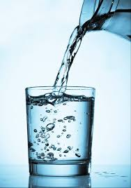
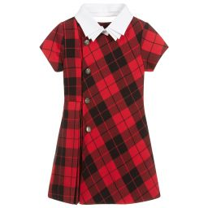

Una necesidad es una carencia, la falta de algo.
Según su naturaleza, las necesidades se clasifican o dividen en dos grandes grupos:
- Necesidades vitales o primarias
- Necesidades no vitales o secundarias
Las necesidades vitales o primarias: como indica la palabra, son aquellas esenciales o imprescindibles para la subsistencia, para vivir. Si no satisfacemos estas necesidades no podemos seguir viviendo.
Son ejemplos de necesidades vitales el agua, los alimentos, el aire, la vestimenta, la vivienda, etc.
|

Agua
|
Alimentos
|

Vestimenta
|
Vivienda
|
Las necesidades no vitales o secundarias: son aquellas esenciales para el espíritu, para mejorar la calidad de vida, pero que no comprometen la subsistencia. Es decir, si no satisfacemos estas necesidades, podemos seguir viviendo.
Que se llamen necesidades “secundarias” no significa que no sean importantes. Por ejemplo, el transporte es muy importante, pero como se puede vivir sin él, es una necesidad no vital. ¿Y qué decir de la educación? Es extremadamente importante, pero como hay personas que viven sin educación, también se la puede considerar como no vital. Otros ejemplos de necesidades no vitales podrían ser el confort, la recreación, la electricidad, etc.